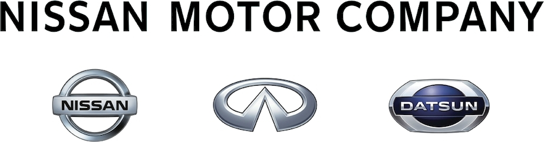

Nissan
Nissan se originó en Japón y fue fundada por Yoshisuke Aikawa,
quien se convirtió en presidente de Nihon Sangyo en 1928. Nihon Sangyo se fusionó para convertirse en lo que ahora se conoce como Nissan Motor Company en 1931.
En 1933, Nihon Sangyo se agregó oficialmente a la Bolsa de Valoresde Tokio con su nombre de cotización Nissan.
Nissan luego se expandió a Australia, México y, en 1958, América.
Marcas que pertenecen a este grupo
A este grupo pertenecen:

Volver